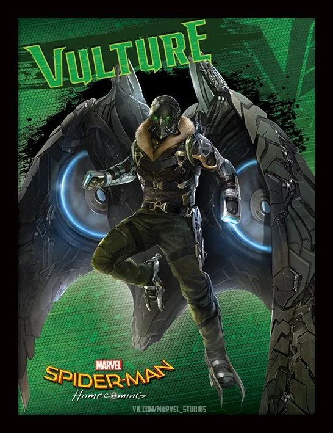

The Vulture (Adrian Toomes)
Adrian Toomes was a hardworking salvage contractor who lost his business after Tony Stark and the government took over cleanup operations following the Battle of New York. Feeling betrayed by the system, he repurposed salvaged alien technology to create powerful weapons and a winged exosuit, becoming the Vulture. Toomes built a criminal empire, selling high-tech weaponry to street-level criminals while keeping his true identity hidden. Unlike other villains, he was motivated by financial survival and a desire to provide for his family rather than pure evil. He became a serious threat to Spider-Man, forcing Peter Parker to prove himself as a hero without relying on Iron Man’s help. Their final confrontation tested Peter’s morals, as he ultimately chose to save Toomes rather than let him die. In the end, Toomes was imprisoned but kept Spider-Man’s identity a secret, hinting at potential future conflicts.